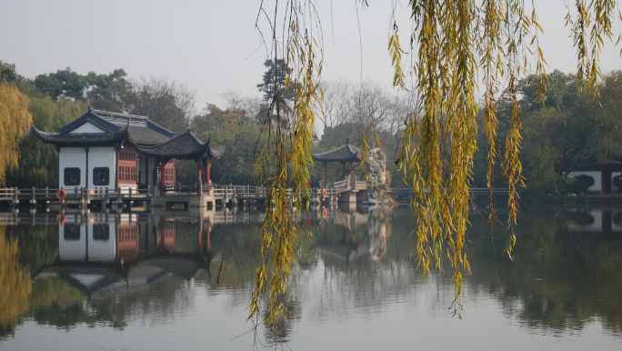
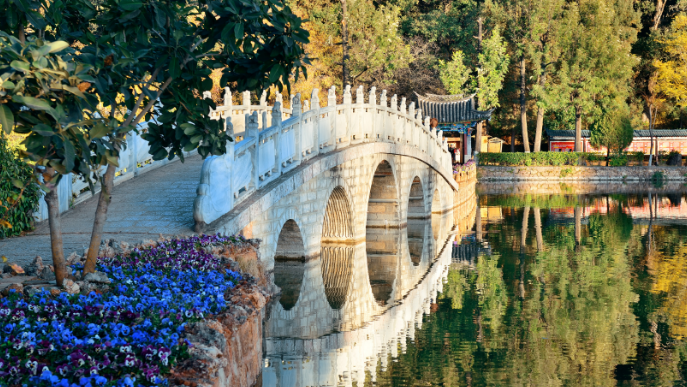

1 / 5

Hàng Châu là thành phố thủ phủ của tỉnh Chiết Giang. Nổi tiếng với phong cảnh thiên nhiên, Hàng Châu và Hồ Tây của nó đã trở thành bất tử trong vô số thơ ca và nhạc sĩ. Vào thế kỷ 13, Marco Polo đã mô tả thành phố là đẹp nhất và tráng lệ nhất trên thế giới.
Cảnh quan nổi tiếng nhất của Hàng Châu, Hồ Tây là một hồ lớn được ngăn cách bởi những con đường đắp cao và được bao quanh bởi các tòa nhà cổ và khu vườn được thiết kế để thư giãn và tâm linh. Du khách sẽ tìm thấy chùa, đền, con đường đi bộ, khu ngồi, trang trại trà và bảo tàng dọc theo bờ biển của nó và đôi khi nhô lên trên mặt nước. Trà là một phần quan trọng của trải nghiệm Hồ Tây. Trà Long Tỉnh được sản xuất ở đó là một trong những loại trà nổi tiếng nhất ở Trung Quốc.
2 / 5
Bắc Kinh là thành phố mà Quảng trường Thiên An Môn, Tử Cấm Thành, Bảo tàng Quốc gia Trung Quốc, cũng như các Cung điện Mùa hè Cũ và Mới tọa lạc. Những điểm tham quan này là nơi lý tưởng để quan sát các khu vườn, kiến trúc cổ và văn hóa Trung Quốc từ nhiều thời kỳ trong lịch sử của đất nước. Một trong những địa điểm phổ biến nhất để ngắm Vạn Lý Trường Thành ở Trung Quốc là Badaling (Bát Đạt Lĩnh), cách Bắc Kinh khoảng 1 giờ đi tàu hoặc 1,5 giờ đi xe buýt.
Được biết đến với địa hình bằng phẳng và thường xuyên quy hoạch, thành phố chỉ có ba ngọn đồi và các đường vành đai đồng tâm của nó thực sự là hình chữ nhật, giống như tạo hình của Tử Cấm Thành. Bắc Kinh tự hào có mạng lưới giao thông công cộng rộng khắp, trong đó có hệ thống tàu điện ngầm. Có những con đường mòn dành cho xe đạp, nhưng du khách có thể thấy ngột ngạt bởi ô nhiễm không khí để đi xe đạp.
3 / 5
Côn Minh, thủ phủ của tỉnh Vân Nam, là trung tâm kinh tế, giao thông và văn hóa của vùng Tây Nam Trung Quốc. Thành phố được kết nối bằng đường sắt từ tất cả các thành phố lớn của Trung Quốc cũng như với Việt Nam; đường sắt liên thông với Hà Nội được khánh thành vào năm 1901.
Khí hậu ôn hòa của Côn Minh làm cho địa điểm này trở thành một nơi phù hợp để ghé thăm vào bất kỳ thời điểm nào trong năm. Côn Minh có mùa đông mát mẻ, khô ráo mặc dù mùa hè có thể nóng và ẩm ướt. Điều kiện tự nhiên phù hợp cho sự phát triển của các loài hoa hoa, với hơn 400 giống được trồng ở đây với hoa trà là hoa đại diện cho thành phố. Thành phố cũng được biết đến với những công viên cây xanh tươi tốt, chẳng hạn như Công viên Cuihu (Hồ Xanh) với những con đường nước và những con đường quanh co. Những du khách nhỏ tuổi có thể thích một chuyến thăm Công viên Daguan (Đại Quan) vì không gian vui nhộn và các quầy hàng ăn uống của nó.
4 / 5
Từ lâu đã nổi tiếng bởi sự sang trọng, vẻ đẹp và văn hóa, thành phố Tô Châu nằm ngay phía đông bắc của Thượng Hải, thuộc tỉnh Giang Tô. Nằm trên bờ Hồ Tai và hạ lưu sông Dương Tử, thành phố có rất nhiều kênh đào và những cây cầu đá xinh xắn; dẫn đến biệt danh của nó, ‘Venice của phương Đông’.
Mặc dù trong những năm gần đây, sự phát triển nhanh chóng của Trung Quốc đã chứng kiến vô số tòa nhà hiện đại mọc lên, Tô Châu vẫn tự hào với những ngôi chùa lâu đời và cảnh quan đường phố tuyệt đẹp. Thành phố có bốn khu vườn cổ điển, với Lưu Viên, với bốn phần riêng biệt, được coi là một khu vườn kiệt tác ở Trung Quốc. Những khu vườn thật thú vị khi đi dạo xung quanh và có đá, cây cối, gian hàng và hồ nước, tất cả được kết hợp hài hòa với nhau. Đại Vận Hà, nối Bắc Kinh và Hàng Châu, chạy qua Tô Châu, tạo ra một mạng lưới kênh rạch khắp thành phố cổ.
5 / 5

Ẩn mình ở phía tây bắc của tỉnh Vân Nam, thành phố Lệ Giang là một nơi dễ chịu và đẹp như tranh vẽ với vẻ đẹp vượt thời gian. Từng là thủ đô của một vương quốc nhỏ, thành phố tự hào là một trong những trung tâm lịch sử được bảo tồn tốt nhất ở Trung Quốc và là một điểm đến du lịch nổi tiếng.
Ở trung tâm của Lệ Giang là Khu Phố Cổ tráng lệ, nơi có những con kênh xinh đẹp, những cây cầu đá cũ và những con đường rải sỏi quanh co. Nơi đây có vô số các tòa nhà bằng gỗ tuyệt đẹp thể hiện kiến trúc truyền thống thanh lịch, với cung điện Mufu rộng lớn là điểm nhấn. Ẩn mình giữa những con hẻm nhỏ hẹp của nó là một số quán trà và nhà hàng quyến rũ để bạn thử.
Bên cạnh nhiều thắng cảnh lịch sử, Lệ Giang còn là nơi cư trú của người Nạp Tây; văn hóa và di sản phong phú của họ có thể được bắt gặp ở bất cứ nơi nào bạn đến.